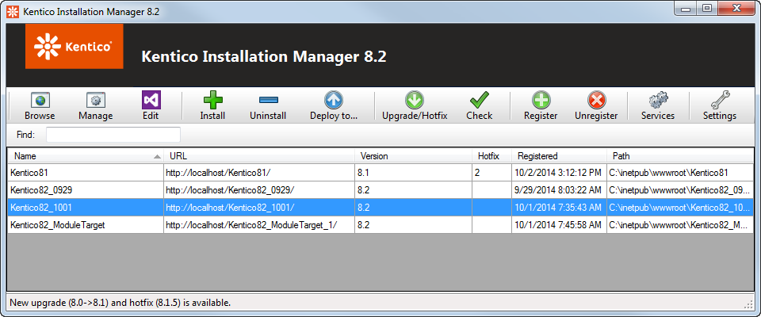

Kentico Installation Manager
Kentico Installation Manager (also referred to as KIM) is an external utility that provides a way to install and manage Kentico instances. You can manage all instances located on a single machine, which is especially useful on machines with a large number of instances.
The utility is compatible with Kentico instances starting from the previous major version. For example, Kentico Installation Manager 11 can work with instances of Kentico 10 or 11.
Launching the KIM utility
The KIM utility is automatically installed as part of the Kentico setup files.
You can launch this utility by selecting Kentico Installation Manager from the Kentico folder in the Windows Start menu.
Kentico Installation Manager interface

Kentico Installation Manager
Browse - opens the URL of the selected instance in a new browser window.
Manage - opens the Kentico administration interface of the selected instance in a new browser window.
Edit - opens the selected instance's web project in Visual Studio.
Install - opens the Kentico Installer, which you can use to create new Kentico instances.
Uninstall - uninstalls the selected instances, optionally including removal from the file system, IIS, database and from the instances list in KIM. See Uninstalling an instance in KIM.
Deploy to ... - allows you to deploy web site projects to a specific directory or remote server. The deployment copies the content of the CMS folder, which you can then use as the physical path of an application in IIS. The Deploy to functionality is not available for web application projects.
Upgrade/Hotfix - opens a dialog box where you can upgrade or hotfix the currently selected instances. See Upgrading and hotfixing an instance in KIM.
Check - checks if there are any new upgrades or hotfixes available for any of the managed instances. See Upgrading and hotfixing an instance in KIM.
Register - opens a dialog where you can manually register instances for management by KIM. See Registering an instance in KIM.
Unregister - unregisters the selected instance from KIM (removes it from the list). See Registering an instance in KIM.
Services - opens Kentico Service Manager, where you can install and manage Kentico Windows services. See Kentico Service Manager.
Settings - opens a dialog where you can adjust settings related to upgrading and hotfixing. See Upgrade and hotfix settings.
In cases where a large number of instances is registered in the utility, you can use the Find text box below the toolbar to search for particular instances by the value stored in their Name column.
Upgrade and hotfix settings
You can adjust the settings related to upgrading and hotfixing by clicking the Settings button on the main toolbar.
On the General tab, you can adjust the following settings:
Check for upgrades/hotfixes - determines when KIM checks if new hotfixes or upgrades are available for registered instances.
On start - KIM checks for updates/hotfixes automatically upon launching.
Manually - KIM checks only after selecting the Upgrade/Hotfix or Check action from the toolbar.
New upgrades/hotfixes - determines what to do when new upgrades or hotfixes are found. Only applicable if On start is selected above.
Announce - KIM displays a notification message.
Download - KIM downloads all new upgrades and hotfixes automatically.
On the Cache tab, you can see the number of temporary upgrade and hotfix folders. These folders contain upgrade/hotfix data unpacked from downloaded upgrade/hotfix packages and are stored in C:\ProgramData\KIM.
You can delete these temporary folders by clicking the Delete button.
On the Update tab, you can check for available updates of Kentico external utilities and setup files.